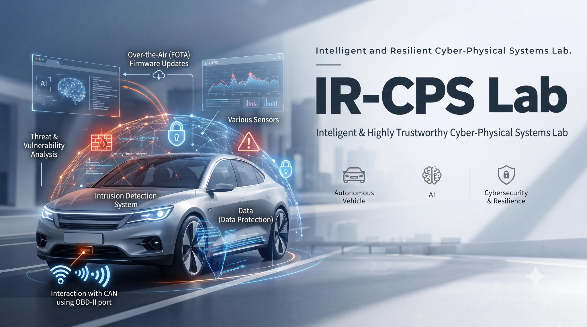

RESEARCH 01
AI 기반 이상탐지 및 고장 진단
산업 설비 및 차량 센서 데이터 분석, 이상탐지, 고장 진단 및 예측

Intelligent & Resilient Cyber-Physical Systems Laboratory
인공지능, 소프트웨어, 임베디드 시스템, 통신·네트워크 및 사이버보안 기술을 융합하여 지능적이고 안전하며 신뢰성 높은 사이버물리시스템의 설계·개발 및 응용 기술을 연구합니다.
사이버 공간의 지능과 물리적 시스템의 안전·신뢰성을 연결합니다.
지능형 고신뢰 사이버물리시스템 연구실(IR-CPS Lab)은 인공지능(AI), 소프트웨어, 임베디드 시스템, 통신·네트워크 및 사이버보안 기술을 융합하여 지능적이고 안전하며 신뢰성 높은 사이버물리시스템(Cyber-Physical Systems, CPS)의 설계·개발 및 응용 기술을 연구합니다.
사이버물리시스템(CPS)은 센서와 제어장치 등으로 구성된 물리적 시스템과 컴퓨팅·통신 시스템이 긴밀하게 연계되어, 물리적 환경의 상태를 실시간으로 수집·분석하고 그 결과를 바탕으로 물리적 시스템을 감시하거나 제어하는 통합 시스템입니다.
CPS는 물리적 환경과 디지털 시스템 간의 상호작용을 통해 지능적인 의사결정과 자동화된 제어를 수행하며, 스마트 제조, 산업 자동화, 자율주행 및 스마트 인프라 등 다양한 분야에 적용됩니다.
지능화·실시간 처리·통신·보안·신뢰성을 아우르는 융합 연구를 수행합니다.
산업 설비 및 차량 센서 데이터 분석, 이상탐지, 고장 진단 및 예측
산업용·차량용 임베디드 소프트웨어, 실시간 데이터 처리
산업용 네트워크, CAN·CAN FD·차량용 Ethernet 통신
산업 제어 시스템 및 차량 네트워크 공격 탐지, AI 기반 IDS
사용자·장치 인증, 차량 ECU 인증, 보안 통신
결함 탐지·복구, 기능 안전성, 시스템 검증 및 신뢰성 평가
차량 네트워크 보안, 자율주행 시스템 이상탐지, 차량 사이버보안
실제 산업·차량 환경의 데이터와 시스템에 적용할 수 있는 기술을 연구합니다.
산업 설비와 자동차의 센서 및 전자제어장치(ECU)에서 수집되는 데이터를 분석하여 이상 상태를 탐지하고 고장 발생 가능성을 예측하며, 이를 소프트웨어와 임베디드 시스템에 적용합니다.
사이버 공격 및 비정상적인 통신 행위를 분석하고, 지능형 침입탐지와 사용자·장치 인증 기술을 통해 시스템의 보안성과 신뢰성을 강화합니다.
하드웨어, 소프트웨어 및 네트워크 간 상호작용을 고려한 시스템 통합과 오류·침입 탐지, 장애 복구 및 성능 검증 기술을 연구합니다.
차량용 임베디드 소프트웨어, CAN 기반 차량 내부 통신, 자율주행 및 커넥티드카의 사이버보안과 기능 안전성을 연구합니다.
We explore intelligent Cyber-Physical Systems (CPS) by integrating expertise from diverse research fields.
Professor · Lab Director
Department of Computer Engineering
Undergraduate Researcher · Lab Member
관심 연구 분야
Undergraduate Researcher · Lab Member
관심 연구 분야
Undergraduate Researcher · Lab Member
관심 연구 분야
지능형·고신뢰·고보안 CPS 핵심 기술 개발
사이버 공격과 시스템 결함에 대응할 수 있는 안전하고 신뢰성 높은 지능형 시스템을 개발하고, 스마트 제조·산업 자동화·산업용 IoT·지능형 모니터링·스마트 모빌리티·자율주행 및 커넥티드카·고신뢰 컴퓨팅 시스템 등 다양한 산업 분야에 적용하는 것을 목표로 합니다.